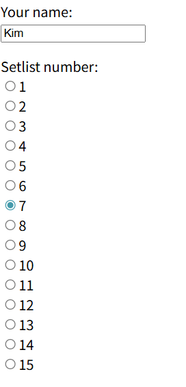
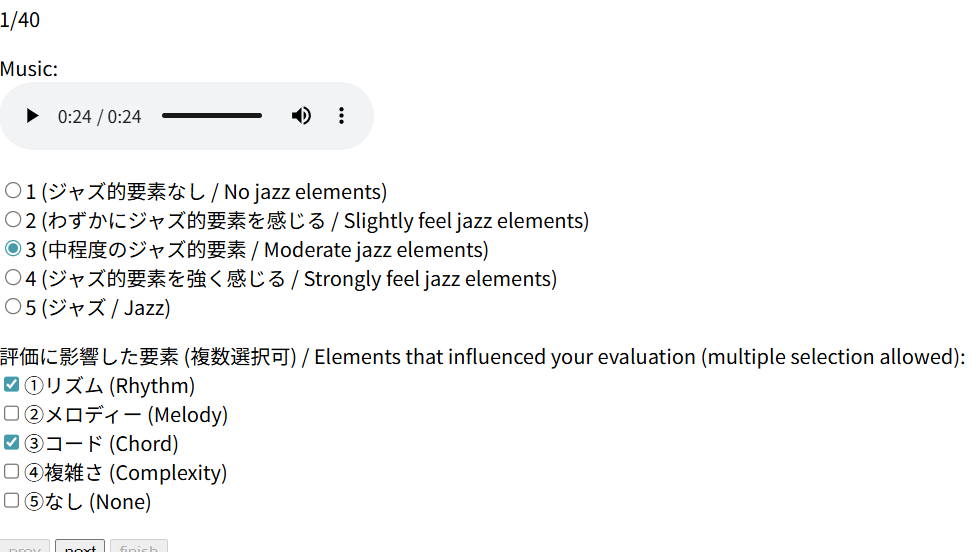
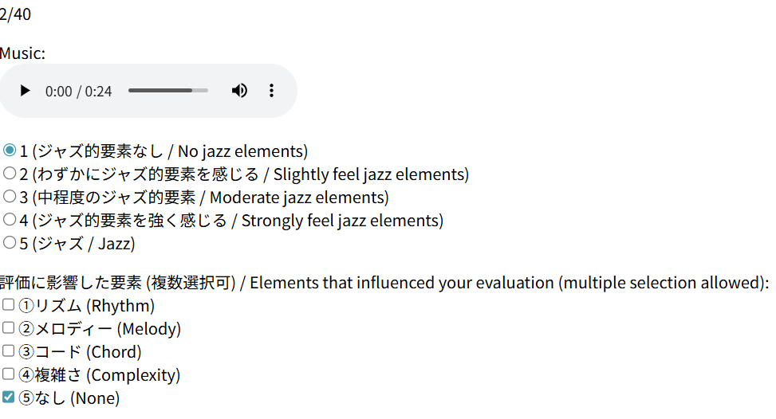

Jazziness evaluation test
評価例 / Evaluation Examples

上の画像は例です。英文の名前と与えられたリスト番号を答えてください。
Below is an example. Please answer with the English result and the given list number.

以下は評価例です。参考にして評価してください。
This is an evaluation example. Please refer to it when evaluating.

以下は評価例です。参考にして評価してください。
This is an evaluation example. Please refer to it when evaluating.
実験完了 / Experiment Complete
全ての評価が完了しました。最後に総合コメントを入力してください。
All evaluations are complete. Please provide a final comment.